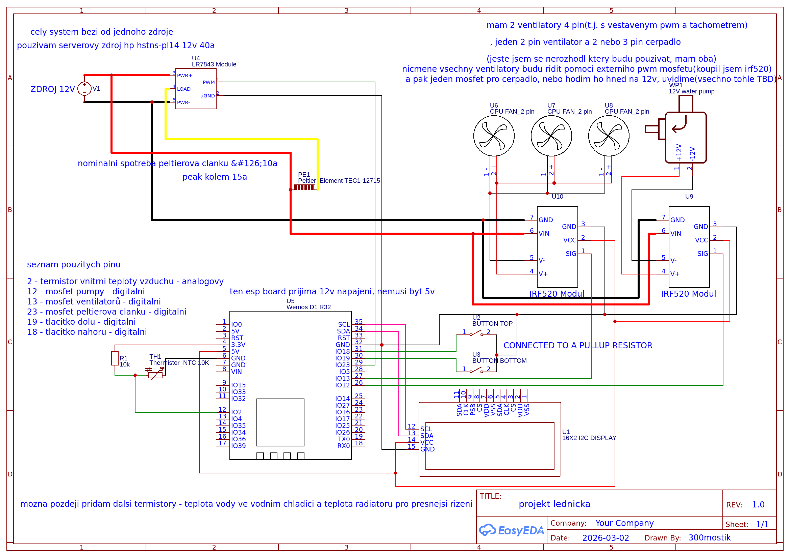

Zjednodušený princip chlazení v našem modelu.
Nejběžnější typ – pracuje na stlačování a expanzi chladiva.
Využívá teplo k pohonu okruhu. Tichý, ale méně účinný.
Chladivo se váže na pevnou látku. Bez pohyblivých částí.
Elektrický proud vytváří teplotní rozdíl mezi dvěma stranami.


Jednoduchý, bezpečný, bez pohyblivých částí. Pro školní projekt ideální volba.
Peltierův článek TEC1‑12715 přenáší teplo z jedné strany na druhou pomocí elektrického proudu.
Peltierovo chlazení funguje na termoelektrickém jevu, kdy elektrický proud přenáší teplo proti jeho přirozenému směru.
Elektrický proud vytváří teplotní rozdíl mezi stranami článku.
Vnitřní prostor lednice se ochlazuje.
Teplo je odváděno ven pomocí vodního chlazení.
Radiátor odvádí teplo do okolí.
ESP32 řídí výkon Peltierova článku pomocí PWM a MOSFET tranzistoru.
Řídicí jednotka systému.
Reguluje proud do článku.
Měří vnitřní teplotu.
Hlavní chladicí prvek.
Konstrukce využívá principu „krabice v krabici“ s pěnovou izolací.
Nosná konstrukce. /**/
Chlazený prostor.
Využití regulerního chadiče PCU a vodního chadiče
Montážní pěna minimalizuje ztráty.
Sledovali jsme stabilitu, rychlost chlazení a efektivitu.
±1 °C od cílové hodnoty.
20 °C → 5 °C za 18 minut.